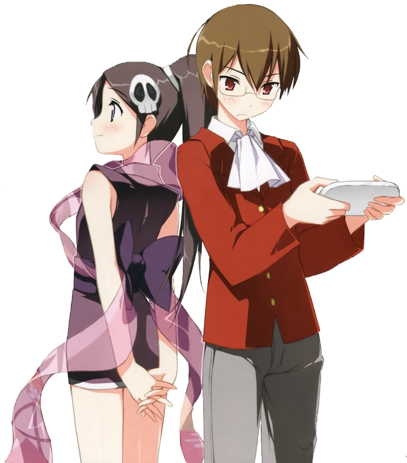

The World God Only Knows is an anime (Started out as a Manga)
starring young Keima Katsuragi, a second year high school student, who enjoys
dating simulation games. He is considered a otamegane because of this
obsession. The series begins and Keima is considered to be a "God" amongst
other dating sim players. Keima is Able to beat and obtain every route in
these games, which is what netted him this title.
Keima is contacted constantly by people asking how to beat certain games, or asking him to beat them. However, he receives a mysterious e-mail asking him to "conquer" girls, which he promptly accepts thinking that someone had sent him an invitation to a game. Much to his surprise a demon girl named Elsie appears to tell him that she needs help capturing "Loose souls"
These souls are runaways from Hell, and they hid within the hearts of girls. Keima's job is to use his skills to make them fall in love with him to fill in the gaps that the loose souls use to hide. He is, however, only interested in virtual women and only agrees to do it because the contract is done, and they would both (Keima and Elsie) die if they didn't complete the contract.
Read more by clicking here
{kind=link}
{kind=link}
{kind=link}
{kind=link}